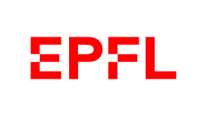

I am a PhD student in Computer Science at EPFL, VILAB, supervised by Prof. Amir Zamir. My research focuses on multi-modal foundation models. I am interested in how to build unified AI models that can effectively work with different types of data through pre-training, post-training, and reasoning approaches.
I received my M.Sc. degree from ETH Zurich, where I worked with Dr. Lei Ke and Dr. Martin Danelljan. I received my B.Sc. degree from Zhejiang University. Previously, I have interned at Adobe Research with Dr. Joon-Young Lee.
Publications
* denotes equal contribution
Experience

PhD Student in Computer Science
EPFL
Sep 2024 - Present
Research Intern
Adobe
May 2024 - Aug 2024
M.Sc. in Electrical Engineering and Information Technology
ETH Zurich
Sep 2021 - May 2024
B.Sc. in Electronic Information Engineering
Zhejiang University
Sep 2017 - Jun 2021